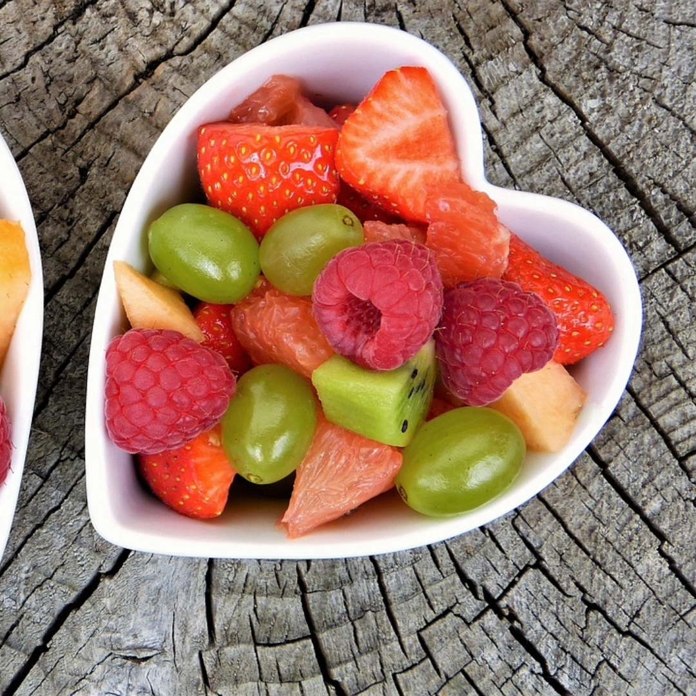

WELCOME/PROBLEM STATEMENT
Welcome to The Coffee Shop! The hottest spot in town, where you can sit back and relax with the warm smell of coffee, sweets, and more....
Fairtrade Coffee
At The Coffee Shop, we like to ensure that our products and procedures align with the Fairtrade ethics. We strive to perform our duties and provide our goods with honesty and care. Delight in our coffee and pastries, knowing that it was made with integrity and love.
Organic Ingredients

Not only do we serve the best coffee in town, we use top-of-the-line ingredients in all of our cups and dishes. Come and savor our organic Blueberry Muffins or our homemade Banana Nut Bread! Come and pick your choice from many more.
Locally Owned

The Coffee Shop has been a proud and integral piece of town for many years. We welcome not just visitors from out of town but our friends, families and neighbors to come and enjoy all we offer!
The Coffee Shop

The Coffee Shop! The place in town to be if you want to enjoy and savor a delicious cup of coffee, and wide range of pastries. Click here to learn more about us and our goods!About Us


Healthy Options
- Fruit Bowls
- Avacado Toast
- Yogurt
- Veggie Wraps
- More? Click Here!
TESTIMONIALS AND REVIEWS
- John Doe: "The Coffee Shop is a wonderful place to go and enjoy your time for some relaxation. I enjoyed their delicious avacado toast and cappucino. Great atmosphere and service."